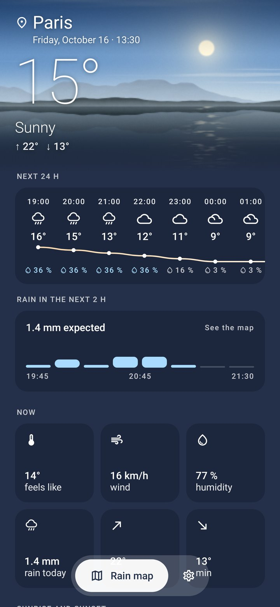
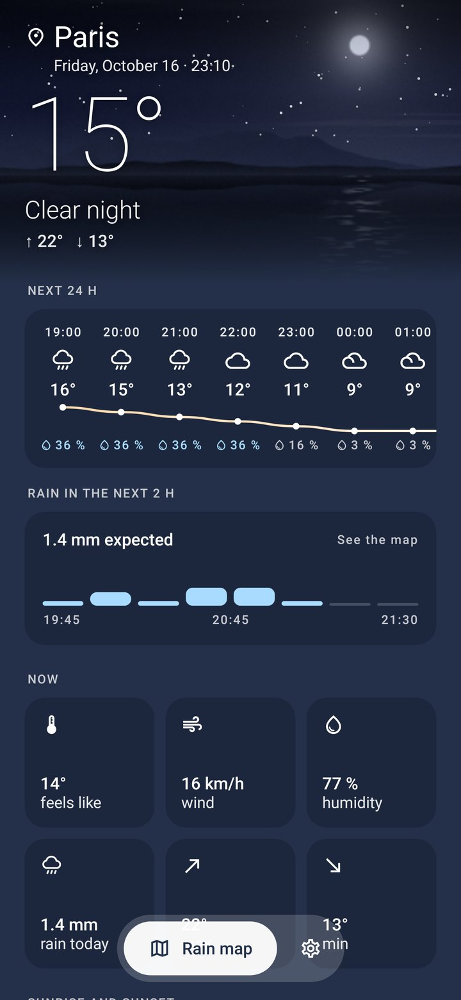
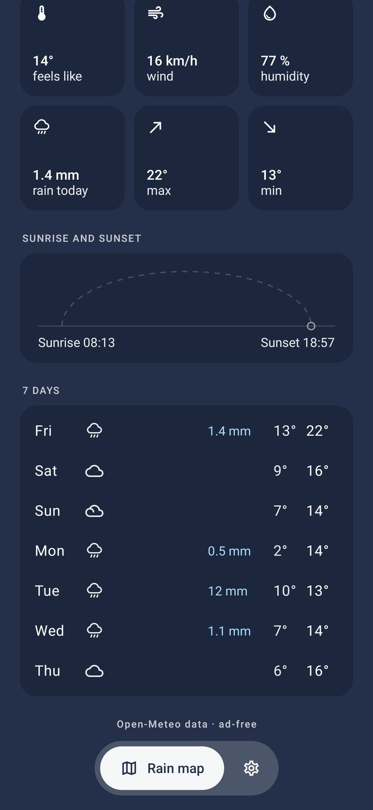
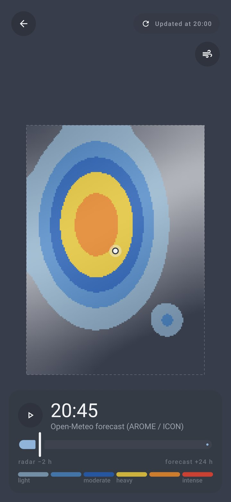
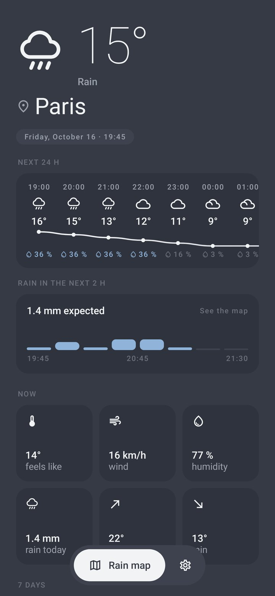
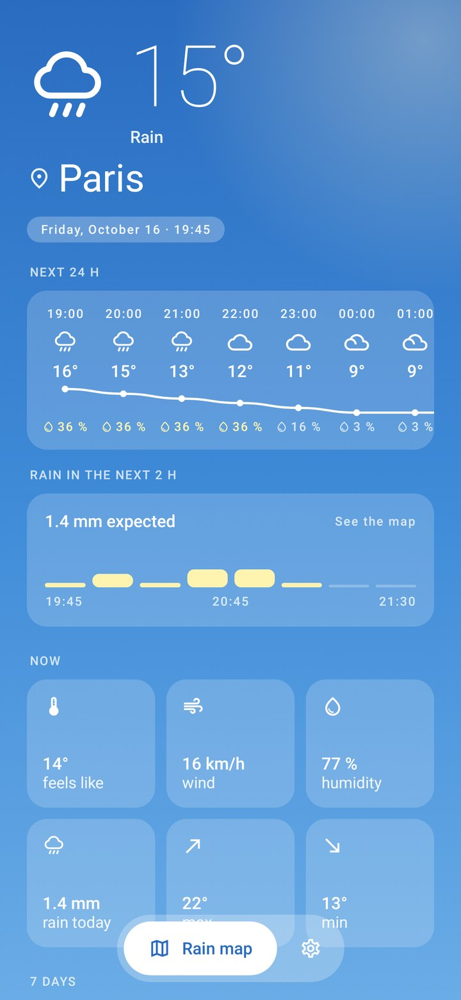
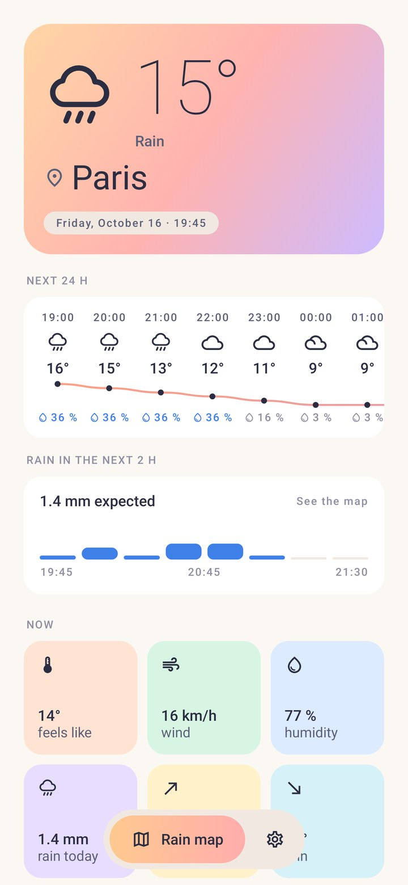
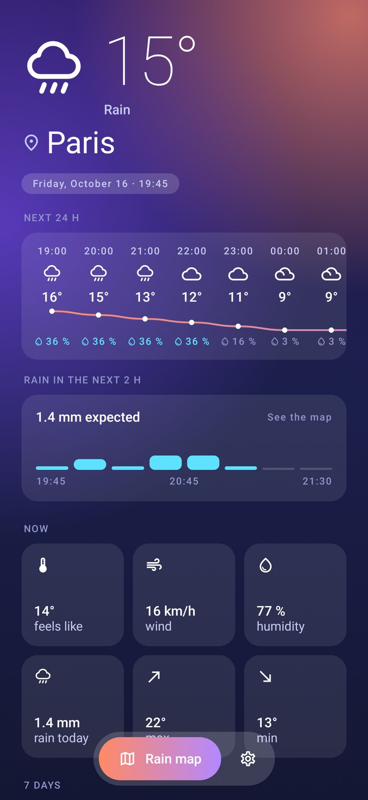

What the app does
◎
Your location
GPS by default, plus your saved places.
☂
Rain every 15 minutes
High-resolution models (AROME, ICON) and an alert when rain is due within the hour.
▦
Rain map
Observed radar, smooth animated forecast, Meteosat satellite clouds, wind map.
▢
Six widgets
From the 2×1 pill to the rain map, each with its own background and transparency.
◐
Themes
Slate, Sky, Pastel, Aurora and Nature, whose landscape follows the time and the weather.
◌
Zero ads
No advertising SDK or tracking, open source code, automatic updates from GitHub.
The Nature theme




Widgets
Five themes



